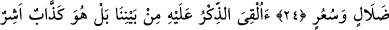
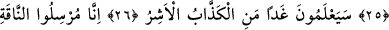
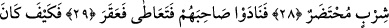
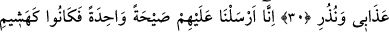
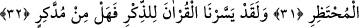

ARAMIZDAN
BİR BEŞERE Mİ
UYACAĞIZ?
23. Semûd kavmi de uyarıcıları yalanladı.
24. «Aramızdan bir beşere mi uyacağız? O takdirde biz apaçık bir sapıklık ve
çılgınlık etmiş oluruz» dediler.
25. «Vahiy, aramızda ona mı verildi? Hayır o, yalancı ve şımarığın biridir»
(dediler.)
26. Yarın onlar, yalancı ve şımarığın kim olduğunu bileceklerdir.
27. Gerçekten onları imtihan etmek için dişi deveyi gönderen biziz. Sen onları
gözetle ve sabret.
28. Onlara, suyun aralarında paylaştırıldığını haber ver. Her biri kendi içme
sırasında gelsin.
29. Arkadaşlarını çağırdılar, o da (bundan cür’et alarak) kılıcını kaptı ve deveyi
kesti.
30. (Bu azgınlara) azabım ve uyarılarım nasıl oldu!
31. Biz onların üzerlerine korkunç bir ses gönderdik. Hemen hayvan ağılına
konan kuru ot gibi oluverdiler.
32. Andolsun biz Kur’ân’ı, anlaşılıp öğüt alınması için kolaylaştırdık. O halde
düşünüp öğüt alan yok mu?
Sâlih (a.s.)’dan işittikleri öğütleri ve uyarıları, yahut peygamberleri yalanladılar. Zira
peygamberlerden birini yalanlamaları, hepsini yalanlamaktır. Çünkü onların dinleri
birdir, onlar Allah’ın dînî ve şerîatleri üzerinde müttefiktirler.